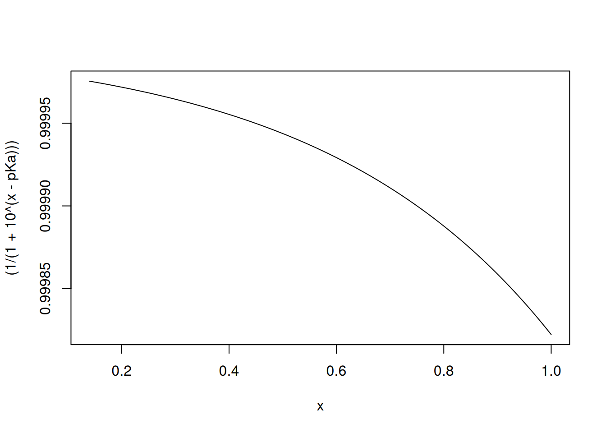
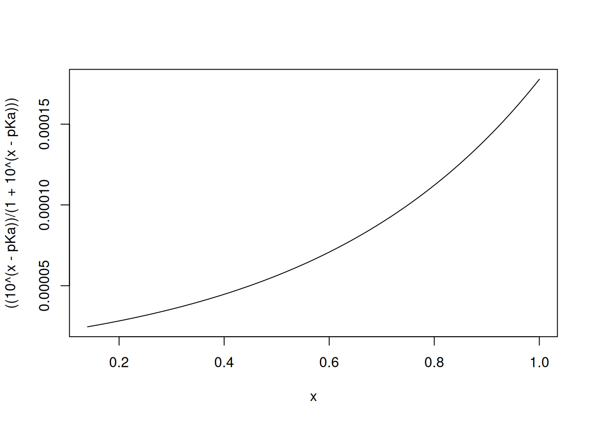
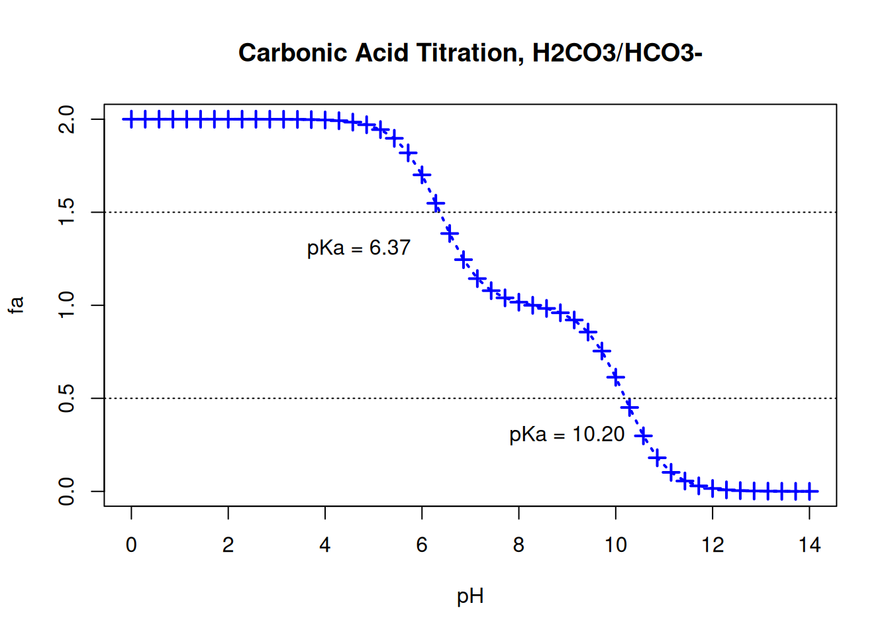
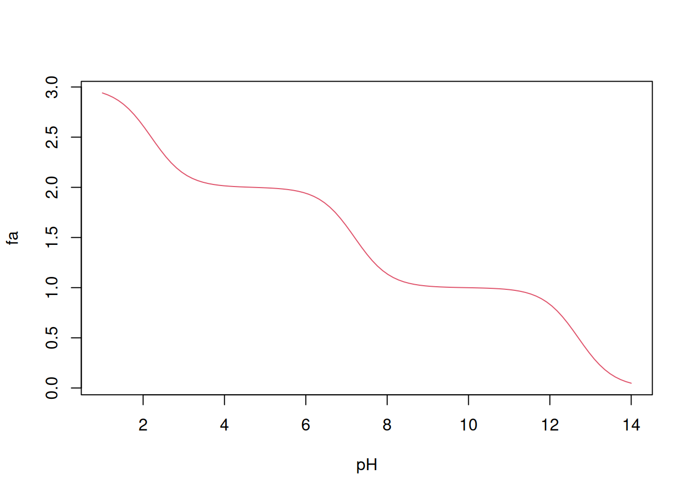

Thus, it can be defined that after a certain amount of base, the initial value of HA, in unitary fraction, will be 1-fb; thus, the Henderson-Hasselbach expression can be written as:
\[\begin{equation}
fa = 1- fb
\label{HH-fb2}
\end{equation}\]
Resulting in
\[\begin{equation}
fa = \frac{1}{1+10^{(pH-pKa)}}
\label{eq-HH-fa}
\end{equation}\]
In this way, it is possible to simulate by R a titration curve of any weak acid based on its pKa value. Using an acetobacterial medium as an example, we can illustrate the acetate buffer, with a pKa value of 4.75. To do this, the curve function is used with its arguments (args), as follows:
# Arguments for a functionargs(curve)
function (expr, from = NULL, to = NULL, n = 101, add = FALSE,
type = "l", xname = "x", xlab = xname, ylab = NULL, log = NULL,
xlim = NULL, ...)
NULL
Or, in a simpler way:
# Titration curve for the acetate/acetic acid systempKa =4.75curve((1/(1+10^(x-pKa))),0.14)

Relationship between pH (abscissa) and acid fraction (ordinate) for the conjugate pair acetic acid/acetate ion.
You can also do the opposite, creating a graph with the fraction fb:
# Titration curve for the acetate/acetic acid systempKa =4.75curve(((10^(x-pKa))/(1+10^(x-pKa))),0.14)

Relationship between pH (abscissa) and basic fraction (ordinate) for the conjugate pair acetic acid/acetate ion.
Bicarbonate system
With the above procedure, it is also possible to simulate the titration curve for the blood buffer bicarbonate system based on the pKa values of the conjugate acid-base pair, simply by adding the expressions in the equation \(\eqref{eq-HH-fa}\), such that:
\[\begin{equation}
fa = \frac{1}{1+10^{(pH-pKa1)}}+ \frac{1}{1+10^{(pH-pKa2)}}
\label{HHbic}
\end{equation}\]
And of course, starting from the arguments of the curve function above, and the flexibility that the internal package Graphics of R allows, one can elaborate a more complex curve, as follows:
pKa1 =6.37pKa2 =10.20curve((1/(1+10^(x-pKa1)))+1/(1+10^(x-pKa2)),0,14,xlab="pH",ylab="fa",main="Carbonic Acid Titration, H2CO3/HCO3-",type="o", n=50,lwd=2,lty="dotted",pch=3,col="blue",cex=1.2) # titration graphtext(4.7,1.3,"pKa = 6.37") # inserting text into the graphtext(9,0.3,"pKa = 10.20")abline(0.5,0, lty="dotted") # dotted line at specific intercept# and slopeabline(1.5,0, lty="dotted")

Variation of pH with reduction of the acid fraction in a bicarbonate system.
For illustration purposes, it is possible to “recover” the physiological pKa value above, that is, pKa1, using the locator() command. Since it is just one point on the graph, simply type the code locator(1) and left-click on the point on the curve corresponding to the fraction of 0.5 for fa.
locator(1) # for more points on the graph, simply increase the value in parentheses
Note that as the pH value approaches that of pKa, the increasing variation in fa seems to affect the variation in pH less and less. This is the “soul” of the buffer system, which allows organisms to resist pH variations as long as they are close to the corresponding pKa value (bicarbonate, phosphate, proteins).
While the bicarbonate system has two pKa values 1 , one of which is in the extracellular physiological buffering range, the phosphate system that acts intracellularly has three pKa values, although it also acts in only one physiological range.
Phosphate system
In the same way as simulated for the bicarbonate system, we can develop a titration curve for the phosphate buffering system, this time considering its three pKa values corresponding to each dissociation of triprotic acid. As before, the expression that defines the fraction fa should be taken as an algebraic sum, as follows:
\[\begin{equation}
fa = \frac{1}{1+10^{(pH-pKa1)}}+ \frac{1}{1+10^{(pH-pK2)}}+\frac{1}{1+10^{(pH-pKa3)}}
\label{eq-HHfosf}
\end{equation}\]
In R this can be done as follows: \(\eqref{eq-HHfosf}\)
As illustrated in the supply of arguments to the args function, ‘R’ is an object-oriented programming language, and its commands are structured as functions. Thus, it is possible to create a function in ‘R’ to operationalize or automate any computational work.
A function can be created basically by the following instruction:
As an example, a function can be created to convert the temperature from degrees Celsius (C) to absolute temperature (K), as follows:
# Function to convert degrees Celsius to KelvinCtoK <-function (tC) {tK <-tC +273.15return(tK)}
To execute this CtoK function, simply:
# Executing CtoK:CtoK (37)
[1] 310.15
With this in mind, we can also create a function that helps in the elaboration of titration curves, as above. These operations can be automated not only for the phosphate buffer, but for any compound under dissociation in aqueous medium, regardless of the number of protons involved. To do this, it is necessary to:
Define a function of R that contains the parameters and the desired operation.
Include a loop structure in the function that allows the operation to be repeated until the compound’s proton count is exhausted.
Define a vector of R containing the compound’s pKa values.
Define the curve expression that enables the simulation.
Below is a code model that allows the simulation for the phosphate buffer.
#Define titration function and plotfa =function(pH,pKa) {x=0for(i in1:length(pKa)) {x = x+1/(1+10^(pH - pKa[i]))}return(x)}pKa=c(2.2,7.2,12.7)curve(fa(x,pKa),1,14, xlab="pH", ylab="fa",col=2)

Titration curve for phosphate buffer, as obtained by programming in R.
Note: the pKa value of the bicarbonate system is 6.8 when considering \(CO_2\) as a source of carbonic acid \(H_2CO_3\) in its reaction with \(H_2O\), for example, for determining arterial parameters and from hospital analyzer (\(CO_2\), \(HCO_3^-\), \(O_2\)).↩︎